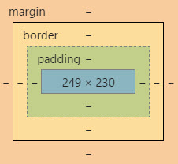

Udacity Reflection - Part 1
A reflection on what was learnt from Udacity Lesson 1
My first wishlist of design and structural features for my site
- Use of an eye catching font
- Use a "hero" image
- Interesting use of typograpy size
- More intersting use of font colour or shade
- Incorporate icons
- Better site navigation with links so consistent and easy to navigate
- More interesting layout using boxes and creating a grid to arrange them
- Make the page responsive to size changes
- Consistency of design throughout site
- A semi-flat design, flat enough so quick to load and easy to read but find a way to incorporate some depth e.g. use of shadow
- Add images where appropriate
A non-technical HTML, CSS and DOM analogy
If we were are going to perform a play the starting point is the script. This gives us the fundamental elements of the play, the characters, the lines and the order in which everything happens. This what HTML does, it provides content with order and structure. That alone however does not make a good play, it needs set design, costume design and interpretation of the dialogue so that it makes sense and fulfills its purpose i.e. being entertaining, thought provoking etc. This is the CSS function, it gives style to the HTML to bring the page to life. Now the DOM (Domain Object Model)is a bit trickier to fit into this analogy but here goes. Think of it as the final production of the play and the browser as the director, all the components are there, the script, the set etc. but it is the directors job to look at everything and organise it to present to the audience. The browser reads the HTML and CSS and creates the DOM to present the page to be viewed.
What is meant by boxifying design
Boxifying a webpage design means breaking its design elements into a series of boxes by drawing an outline around them. This can be done using a graphical application or by printing out the page and using a pencil to draw the boxes. The most important or biggest design elemnts should be boxed first and then the next important etc. until all the design elements are boxed. By breaking the design down like this the developer can create the page in managable steps, one box at time.
What is the box model
 The end result of boxifying a design is to have all the HTML elements in a box. The box model is the specification that defines the box attributes. The attributes are the size of the box itself. the padding, the border and the margin and determined by height and width which can be expessed as number of pixels or a percenatage.